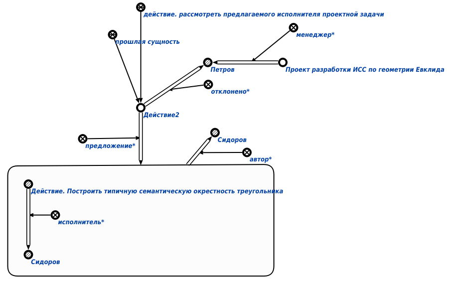

Команда отклонения менеджером предложения по редактированию базы знаний предназначена для отклонения* менеджером* исполнителя*, подписавшегося на выполнение проектного задания. Единственным аргументом команды является знак действия. рассмотреть предлагаемого исполнителя проектной задачи. Результатом выполнения запроса является отклонение* менеджером* исполнителя* конкретного проектного задания. Например:
